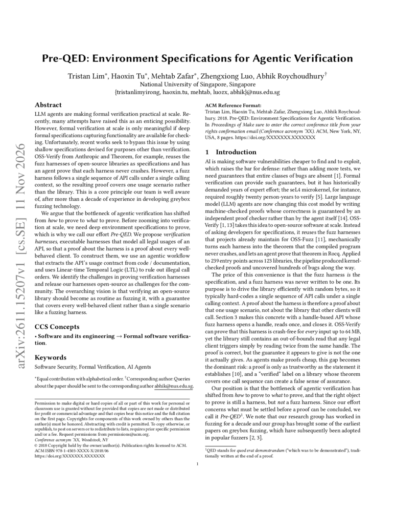

Pre-QED: Environment Specifications for Agentic Verification
The bottleneck is shifting from how to prove to what to prove.
Acknowledgment: This work was partially supported by a research project “AI for Program Reasoning”, under AI for Science program of National Research Foundation (NRF) Singapore.
@misc{lim2026preqed,
title = {Pre-QED: Environment Specifications for Agentic Verification},
author = {Lim, Tristan and Tu, Haoxin and Zafar, Mehtab and Luo, Zhengxiong and Roychoudhury, Abhik},
year = {2026},
url = {https://pre-qed.github.io/pre-qed.pdf}
}

Read the paper ↗harnesses
properties
† We start from the 32 subjects with publicly released proofs in OSS-Verify and build verification harnesses for 29 of them, excluding reac-pw (an application, not a library) and openssl and mbedtls (over 2,000 API functions each, too many to review).
* The other 18 fall short of 100% because their uncovered APIs depend on other build configurations, processes, or the filesystem, or daemons and private libraries (e.g., libpcap, leptonica, varnish).
Agentic proofs are becoming practical
LLM agents are making formal verification practical at scale. We showed this was possible with AutoRocq, the first agent to verify software systems by collaborating autonomously with the Rocq theorem prover. Unlike earlier approaches that depend on extensive training on proof examples, AutoRocq learns on the fly. It queries the prover for relevant context before choosing a proof step, reasons over the structure of the proof tree, and uses the prover’s feedback to refine the proof iteratively. The result is a proof derivation checked by Rocq, so its correctness never rests on the agent alone. As AI-generated code becomes widespread, this points towards coding agents that generate and validate in a single loop, moving closer to trusted automatic programming.
However, formal verification at scale is only meaningful if deep formal specifications capturing functionality are available for checking. Recent efforts bypass this issue by reusing specifications devised for other purposes. OSS-Verify from Anthropic and Theorem, for example, starts with the fuzz harnesses that projects already maintain. It compiles each harness and its library into a sanitized RISC-V binary, then generates a theorem stating that the program terminates normally for every input smaller than 64 MB under the modeled Linux environment. An agent constructs the proof, and the Rocq kernel checks it. But a fuzz harness follows a single sequence of API calls under a single calling context, so the resulting proof covers one usage scenario rather than the library. A correct proof can therefore still establish a narrower guarantee than users expect.
We argue that the bottleneck of agentic verification has shifted from how to prove to what to prove. Before zooming into verification at scale, we need deep environment specifications to prove, which is why we call our effort Pre-QED. We propose verification harnesses, executable harnesses that model all legal usages of an API, so that a proof about the harness is a proof about every well-behaved client. Because these harnesses remain executable, their value is not limited to proofs. A fuzzer can drive the same harness through many legal call sequences and calling contexts, enabling more extensive fuzzing than a conventional harness that fixes a single scenario.
A verified harness is not a verified library
A proof covers the behavior represented by its target. If a harness always opens a handle, reads once, and closes it, varying the input cannot introduce a second read. It may also fix the request size and the state at each call. Legal sequences and calling contexts absent from the harness remain outside the theorem.
The animation starts with one proven path that opens a handle, reads once, and closes it. Other legal uses then appear, including repeated reads and closing and reopening a handle. The original proof does not automatically cover these paths. The blue rectangle groups them into a broader verification target; it does not mean they have been proved safe.
We carry this idea into a concrete example in our paper. A faulty read operation limits a request to the source buffer’s total capacity rather than the bytes remaining. The fixed harness reads once from position zero and stays within bounds. A legal client that reads 40 bytes twice from a 64-byte source instead reads 16 bytes past its end.
From fuzz harnesses to verification harnesses
The gap has two parts: which API call sequences the harness admits, and which arguments and accumulated states those calls can use. We propose verification harnesses that decode input bytes into operation sequences, aiming to cover every legal usage under an explicit API contract.
The harness must admit valid sequences and contexts while excluding client misuse. Reads require a live handle, closed handles must not be reused, and request lengths must fit the destination buffer. Inputs that the contract leaves unconstrained should remain unconstrained: validating them is the library’s responsibility.
An agentic workflow guided by the API contract
A main agent studies the code and documentation, separating call-order rules from data preconditions. A harness subagent generates executable code and refines it using coverage feedback. An LTL subagent expresses the ordering rules in Linear-time Temporal Logic, using spot checks and an LLM-as-judge assessment to refine the formulas.
Synthesis reconciles the harness and temporal properties, with guards and state updates tied to the rules they enforce. Data preconditions are enforced by the harness rather than expressed in LTL. The result uses the existing entry-point proof pipeline while admitting sequences such as repeated reads that expose the example’s defect.
documentation
contract
harness
Open challenges: proving verification harnesses
Constructing a harness is not the same as proving it. We release verification harnesses as open challenges: proving them requires reasoning across operation sequences and persistent library state. Three capabilities are central.
Discovering invariants over persistent state. The prover needs an invariant describing states reachable through legal calls, such as a cursor remaining within the source capacity. Real libraries add heap structures, buffer ownership, and internal state machines. These facts must ultimately be established for the compiled binary.
Proving and composing API-level lemmas. Rather than analyze every sequence separately, prove that each operation terminates without error and preserves the invariant when its preconditions hold. Reusing these lemmas across calls makes reasoning about arbitrary sequences possible.
Proving compliance with the usage protocol. Relate the harness’s protocol state to the library state: “open” must imply a live, well-formed handle. Prove that every trace satisfies the extracted LTL rules, moving beyond spot checks. Protocols requiring eventual resource release additionally need liveness reasoning.
Our vision is to make library verification as routine as fuzzing, with guarantees covering every well-behaved client represented by the contract. The harness and its temporal properties become trust-critical artifacts, reviewed alongside the code. Richer correctness properties, proofs across dependencies, callbacks, global state, and concurrency remain directions for future work.